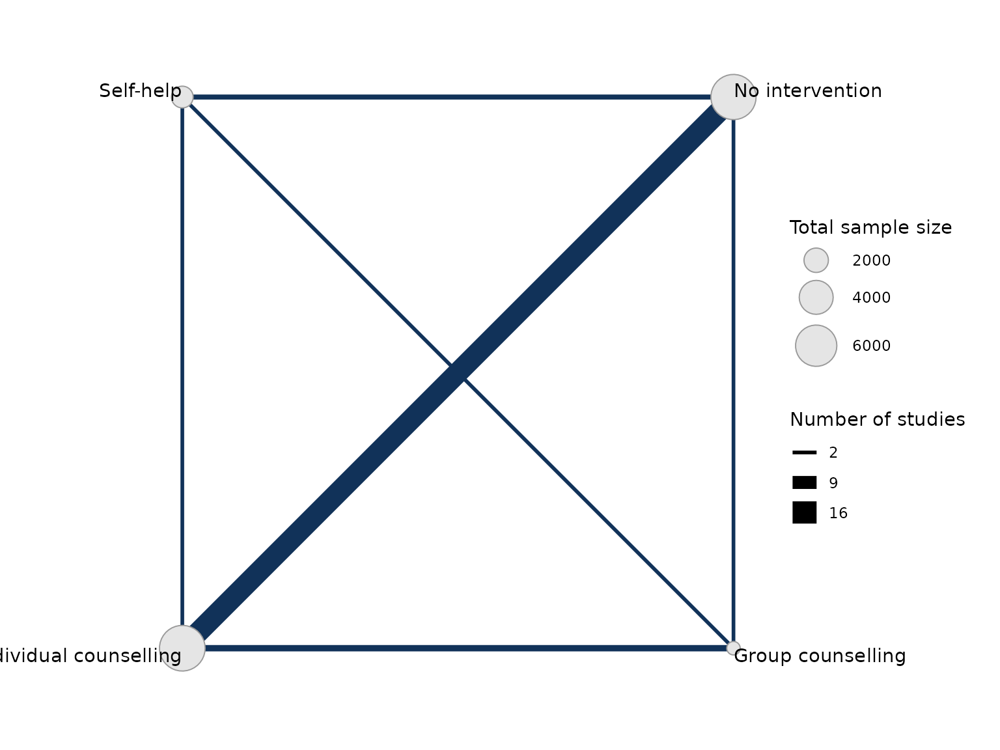
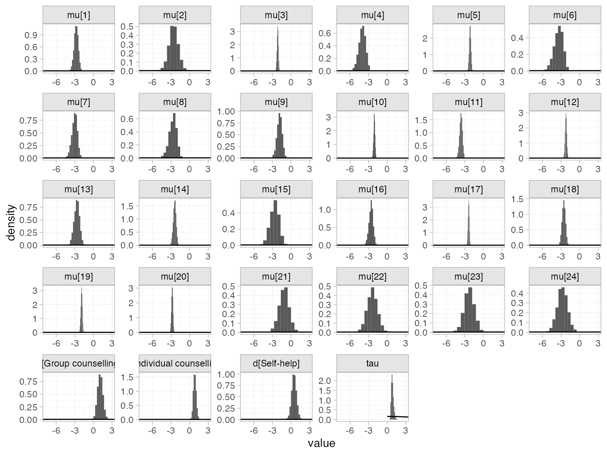
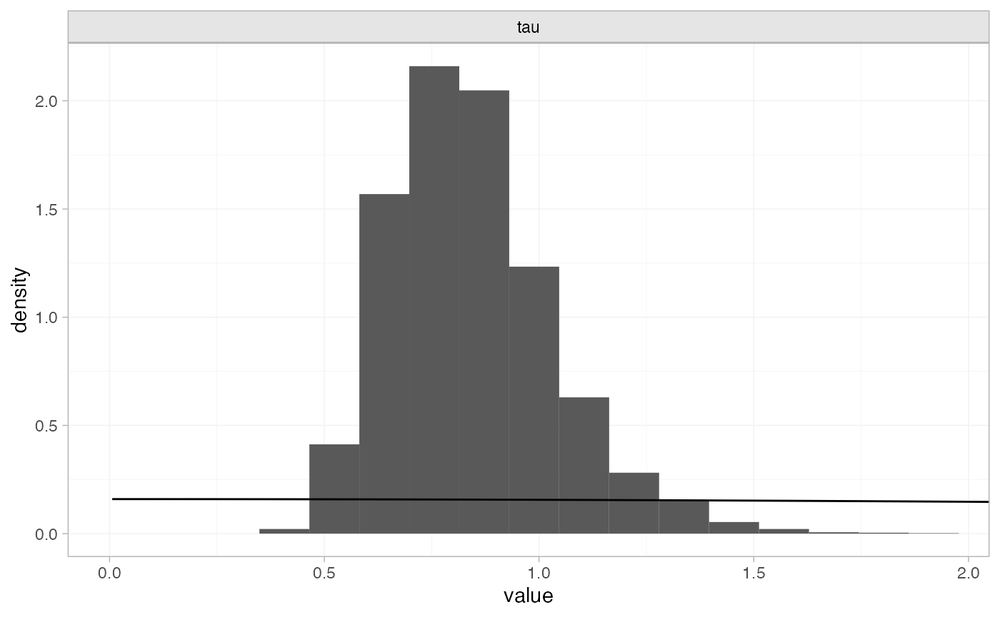
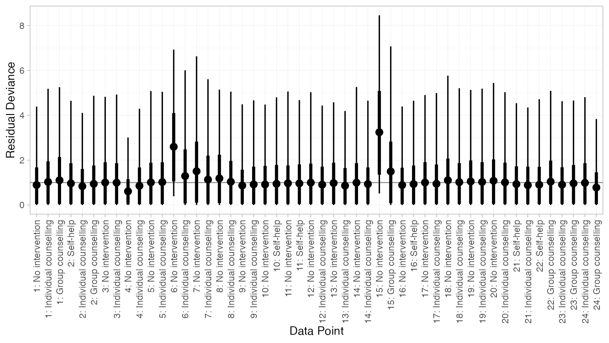
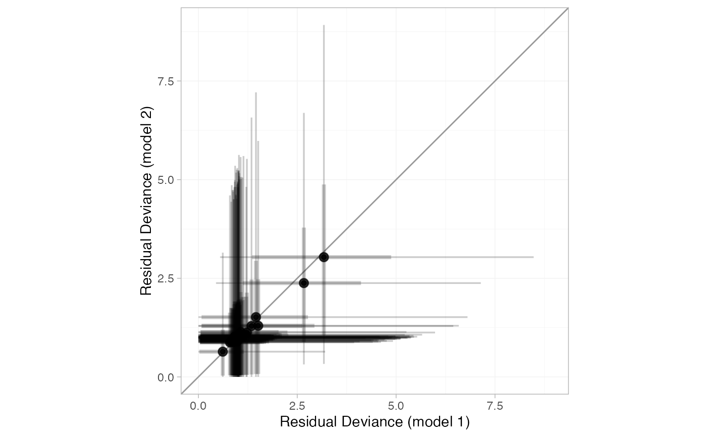
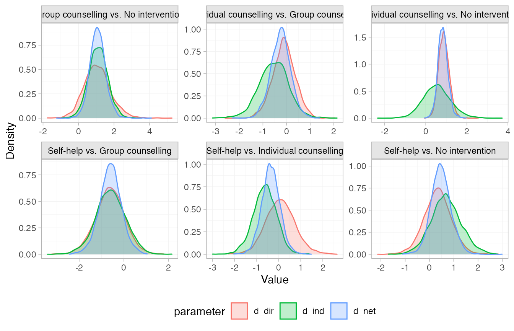
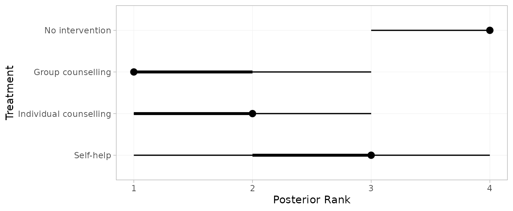
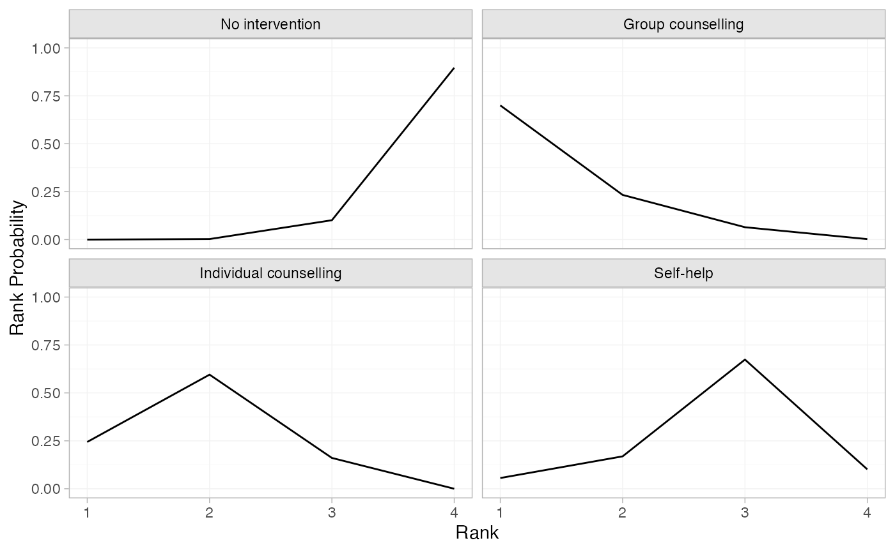

library(multinma)
options(mc.cores = parallel::detectCores())#> For execution on a local, multicore CPU with excess RAM we recommend calling
#> options(mc.cores = parallel::detectCores())
#>
#> Attaching package: 'multinma'
#> The following objects are masked from 'package:stats':
#>
#> dgamma, pgamma, qgammaThis vignette describes the analysis of smoking cessation data (Hasselblad
1998), replicating the analysis in NICE Technical Support
Document 4 (Dias et al.
2011). The data are available in this package as
smoking:
head(smoking)
#> studyn trtn trtc r n
#> 1 1 1 No intervention 9 140
#> 2 1 3 Individual counselling 23 140
#> 3 1 4 Group counselling 10 138
#> 4 2 2 Self-help 11 78
#> 5 2 3 Individual counselling 12 85
#> 6 2 4 Group counselling 29 170Setting up the network
We begin by setting up the network. We have arm-level count data
giving the number quitting smoking (r) out of the total
(n) in each arm, so we use the function
set_agd_arm(). Treatment “No intervention” is set as the
network reference treatment.
smknet <- set_agd_arm(smoking,
study = studyn,
trt = trtc,
r = r,
n = n,
trt_ref = "No intervention")
smknet
#> A network with 24 AgD studies (arm-based).
#>
#> ------------------------------------------------------- AgD studies (arm-based) ----
#> Study Treatment arms
#> 1 3: No intervention | Group counselling | Individual counselling
#> 2 3: Group counselling | Individual counselling | Self-help
#> 3 2: No intervention | Individual counselling
#> 4 2: No intervention | Individual counselling
#> 5 2: No intervention | Individual counselling
#> 6 2: No intervention | Individual counselling
#> 7 2: No intervention | Individual counselling
#> 8 2: No intervention | Individual counselling
#> 9 2: No intervention | Individual counselling
#> 10 2: No intervention | Self-help
#> ... plus 14 more studies
#>
#> Outcome type: count
#> ------------------------------------------------------------------------------------
#> Total number of treatments: 4
#> Total number of studies: 24
#> Reference treatment is: No intervention
#> Network is connectedPlot the network structure.
plot(smknet, weight_edges = TRUE, weight_nodes = TRUE)
Random effects NMA
Following TSD 4, we fit a random effects NMA model, using the
nma() function with trt_effects = "random". We
use \mathrm{N}(0, 100^2) prior
distributions for the treatment effects d_k and study-specific intercepts \mu_j, and a \textrm{half-N}(5^2) prior distribution for
the between-study heterogeneity standard deviation \tau. We can examine the range of parameter
values implied by these prior distributions with the
summary() method:
summary(normal(scale = 100))
#> A Normal prior distribution: location = 0, scale = 100.
#> 50% of the prior density lies between -67.45 and 67.45.
#> 95% of the prior density lies between -196 and 196.
summary(half_normal(scale = 5))
#> A half-Normal prior distribution: location = 0, scale = 5.
#> 50% of the prior density lies between 0 and 3.37.
#> 95% of the prior density lies between 0 and 9.8.The model is fitted using the nma() function. By
default, this will use a Binomial likelihood and a logit link function,
auto-detected from the data.
smkfit <- nma(smknet,
trt_effects = "random",
prior_intercept = normal(scale = 100),
prior_trt = normal(scale = 100),
prior_het = normal(scale = 5))
#> / 2000 [ 50%] (Warmup)
#> Chain 3: Iteration: 1001 / 2000 [ 50%] (Sampling)
#> Chain 2: Iteration: 1000 / 2000 [ 50%] (Warmup)
#> Chain 2: Iteration: 1001 / 2000 [ 50%] (Sampling)
#> Chain 1: Iteration: 1200 / 2000 [ 60%] (Sampling)
#> Chain 2: Iteration: 1200 / 2000 [ 60%] (Sampling)
#> Chain 3: Iteration: 1200 / 2000 [ 60%] (Sampling)
#> Chain 1: Iteration: 1400 / 2000 [ 70%] (Sampling)
#> Chain 2: Iteration: 1400 / 2000 [ 70%] (Sampling)
#> Chain 3: Iteration: 1400 / 2000 [ 70%] (Sampling)
#> Chain 1: Iteration: 1600 / 2000 [ 80%] (Sampling)
#> Chain 2: Iteration: 1600 / 2000 [ 80%] (Sampling)
#> Chain 3: Iteration: 1600 / 2000 [ 80%] (Sampling)
#> Chain 1: Iteration: 1800 / 2000 [ 90%] (Sampling)
#> Chain 2: Iteration: 1800 / 2000 [ 90%] (Sampling)
#> Chain 3: Iteration: 1800 / 2000 [ 90%] (Sampling)
#> Chain 1: Iteration: 2000 / 2000 [100%] (Sampling)
#> Chain 1:
#> Chain 1: Elapsed Time: 0.588 seconds (Warm-up)
#> Chain 1: 0.456 seconds (Sampling)
#> Chain 1: 1.044 seconds (Total)
#> Chain 1:
#> Chain 2: Iteration: 2000 / 2000 [100%] (Sampling)
#> Chain 2:
#> Chain 2: Elapsed Time: 0.617 seconds (Warm-up)
#> Chain 2: 0.447 seconds (Sampling)
#> Chain 2: 1.064 seconds (Total)
#> Chain 2:
#> Chain 3: Iteration: 2000 / 2000 [100%] (Sampling)
#> Chain 3:
#> Chain 3: Elapsed Time: 0.593 seconds (Warm-up)
#> Chain 3: 0.498 seconds (Sampling)
#> Chain 3: 1.091 seconds (Total)
#> Chain 3:Basic parameter summaries are given by the print()
method:
smkfit
#> A random effects NMA with a binomial likelihood (logit link).
#> Inference for Stan model: binomial_1par.
#> 4 chains, each with iter=2000; warmup=1000; thin=1;
#> post-warmup draws per chain=1000, total post-warmup draws=4000.
#>
#> mean se_mean sd 2.5% 25% 50% 75% 97.5%
#> d[Group counselling] 1.11 0.01 0.45 0.22 0.82 1.10 1.40 2.05
#> d[Individual counselling] 0.85 0.01 0.25 0.39 0.68 0.83 1.00 1.36
#> d[Self-help] 0.49 0.01 0.42 -0.32 0.23 0.48 0.75 1.34
#> lp__ -5767.58 0.19 6.30 -5781.19 -5771.58 -5767.27 -5763.13 -5756.26
#> tau 0.85 0.01 0.18 0.56 0.72 0.82 0.96 1.26
#> n_eff Rhat
#> d[Group counselling] 1582 1.00
#> d[Individual counselling] 889 1.01
#> d[Self-help] 1751 1.00
#> lp__ 1137 1.01
#> tau 1067 1.00
#>
#> Samples were drawn using NUTS(diag_e) at Tue May 27 13:34:11 2025.
#> For each parameter, n_eff is a crude measure of effective sample size,
#> and Rhat is the potential scale reduction factor on split chains (at
#> convergence, Rhat=1).By default, summaries of the study-specific intercepts \mu_j and study-specific relative effects
\delta_{jk} are hidden, but could be
examined by changing the pars argument:
The prior and posterior distributions can be compared visually using
the plot_prior_posterior() function:
plot_prior_posterior(smkfit)
By default, this displays all model parameters given prior
distributions (in this case d_k, \mu_j, and \tau), but this may be changed using the
prior argument:
plot_prior_posterior(smkfit, prior = "het")
Model fit can be checked using the dic() function
(dic_consistency <- dic(smkfit))
#> Residual deviance: 53.5 (on 50 data points)
#> pD: 43.5
#> DIC: 97and the residual deviance contributions examined with the
corresponding plot() method
plot(dic_consistency)
Overall model fit seems to be adequate, with almost all points showing good fit (mean residual deviance contribution of 1). The only two points with higher residual deviance (i.e. worse fit) correspond to the two zero counts in the data:
smoking[smoking$r == 0, ]
#> studyn trtn trtc r n
#> 13 6 1 No intervention 0 33
#> 31 15 1 No intervention 0 20Checking for inconsistency
Note: The results of the inconsistency models here are slightly different to those of Dias et al. (2010, 2011), although the overall conclusions are the same. This is due to the presence of multi-arm trials and a different ordering of treatments, meaning that inconsistency is parameterised differently within the multi-arm trials. The same results as Dias et al. are obtained if the network is instead set up with
trtnas the treatment variable.
Unrelated mean effects
We first fit an unrelated mean effects (UME) model (Dias et al. 2011) to
assess the consistency assumption. Again, we use the function
nma(), but now with the argument
consistency = "ume".
smkfit_ume <- nma(smknet,
consistency = "ume",
trt_effects = "random",
prior_intercept = normal(scale = 100),
prior_trt = normal(scale = 100),
prior_het = normal(scale = 5))
#> 2000 [ 50%] (Warmup)
#> Chain 1: Iteration: 1001 / 2000 [ 50%] (Sampling)
#> Chain 3: Iteration: 1200 / 2000 [ 60%] (Sampling)
#> Chain 2: Iteration: 1000 / 2000 [ 50%] (Warmup)
#> Chain 2: Iteration: 1001 / 2000 [ 50%] (Sampling)
#> Chain 1: Iteration: 1200 / 2000 [ 60%] (Sampling)
#> Chain 3: Iteration: 1400 / 2000 [ 70%] (Sampling)
#> Chain 2: Iteration: 1200 / 2000 [ 60%] (Sampling)
#> Chain 3: Iteration: 1600 / 2000 [ 80%] (Sampling)
#> Chain 2: Iteration: 1400 / 2000 [ 70%] (Sampling)
#> Chain 1: Iteration: 1400 / 2000 [ 70%] (Sampling)
#> Chain 3: Iteration: 1800 / 2000 [ 90%] (Sampling)
#> Chain 2: Iteration: 1600 / 2000 [ 80%] (Sampling)
#> Chain 1: Iteration: 1600 / 2000 [ 80%] (Sampling)
#> Chain 3: Iteration: 2000 / 2000 [100%] (Sampling)
#> Chain 3:
#> Chain 3: Elapsed Time: 0.529 seconds (Warm-up)
#> Chain 3: 0.418 seconds (Sampling)
#> Chain 3: 0.947 seconds (Total)
#> Chain 3:
#> Chain 2: Iteration: 1800 / 2000 [ 90%] (Sampling)
#> Chain 1: Iteration: 1800 / 2000 [ 90%] (Sampling)
#> Chain 2: Iteration: 2000 / 2000 [100%] (Sampling)
#> Chain 2:
#> Chain 2: Elapsed Time: 0.625 seconds (Warm-up)
#> Chain 2: 0.436 seconds (Sampling)
#> Chain 2: 1.061 seconds (Total)
#> Chain 2:
#> Chain 1: Iteration: 2000 / 2000 [100%] (Sampling)
#> Chain 1:
#> Chain 1: Elapsed Time: 0.59 seconds (Warm-up)
#> Chain 1: 0.567 seconds (Sampling)
#> Chain 1: 1.157 seconds (Total)
#> Chain 1:
smkfit_umeComparing the model fit statistics
dic_consistency
#> Residual deviance: 53.5 (on 50 data points)
#> pD: 43.5
#> DIC: 97
(dic_ume <- dic(smkfit_ume))
#> Residual deviance: 53.9 (on 50 data points)
#> pD: 45.1
#> DIC: 99We see that there is little to choose between the two models.
However, it is also important to examine the individual contributions to
model fit of each data point under the two models (a so-called “dev-dev”
plot). Passing two nma_dic objects produced by the
dic() function to the plot() method produces
this dev-dev plot:
plot(dic_consistency, dic_ume, point_alpha = 0.5, interval_alpha = 0.2)
All points lie roughly on the line of equality, so there is no evidence for inconsistency here.
Node-splitting
Another method for assessing inconsistency is node-splitting (Dias et al. 2011, 2010). Whereas the UME model assesses inconsistency globally, node-splitting assesses inconsistency locally for each potentially inconsistent comparison (those with both direct and indirect evidence) in turn.
Node-splitting can be performed using the nma() function
with the argument consistency = "nodesplit". By default,
all possible comparisons will be split (as determined by the
get_nodesplits() function). Alternatively, a specific
comparison or comparisons to split can be provided to the
nodesplit argument.
smk_nodesplit <- nma(smknet,
consistency = "nodesplit",
trt_effects = "random",
prior_intercept = normal(scale = 100),
prior_trt = normal(scale = 100),
prior_het = normal(scale = 5))
#> Fitting model 1 of 7, node-split: Group counselling vs. No intervention
#> 0 / 2000 [ 50%] (Warmup)
#> Chain 3: Iteration: 1001 / 2000 [ 50%] (Sampling)
#> Chain 1: Iteration: 1000 / 2000 [ 50%] (Warmup)
#> Chain 1: Iteration: 1001 / 2000 [ 50%] (Sampling)
#> Chain 2: Iteration: 1200 / 2000 [ 60%] (Sampling)
#> Chain 3: Iteration: 1200 / 2000 [ 60%] (Sampling)
#> Chain 1: Iteration: 1200 / 2000 [ 60%] (Sampling)
#> Chain 2: Iteration: 1400 / 2000 [ 70%] (Sampling)
#> Chain 3: Iteration: 1400 / 2000 [ 70%] (Sampling)
#> Chain 1: Iteration: 1400 / 2000 [ 70%] (Sampling)
#> Chain 2: Iteration: 1600 / 2000 [ 80%] (Sampling)
#> Chain 3: Iteration: 1600 / 2000 [ 80%] (Sampling)
#> Chain 1: Iteration: 1600 / 2000 [ 80%] (Sampling)
#> Chain 2: Iteration: 1800 / 2000 [ 90%] (Sampling)
#> Chain 3: Iteration: 1800 / 2000 [ 90%] (Sampling)
#> Chain 1: Iteration: 1800 / 2000 [ 90%] (Sampling)
#> Chain 2: Iteration: 2000 / 2000 [100%] (Sampling)
#> Chain 2:
#> Chain 2: Elapsed Time: 0.626 seconds (Warm-up)
#> Chain 2: 0.491 seconds (Sampling)
#> Chain 2: 1.117 seconds (Total)
#> Chain 2:
#> Chain 3: Iteration: 2000 / 2000 [100%] (Sampling)
#> Chain 3:
#> Chain 3: Elapsed Time: 0.651 seconds (Warm-up)
#> Chain 3: 0.499 seconds (Sampling)
#> Chain 3: 1.15 seconds (Total)
#> Chain 3:
#> Chain 1: Iteration: 2000 / 2000 [100%] (Sampling)
#> Chain 1:
#> Chain 1: Elapsed Time: 0.697 seconds (Warm-up)
#> Chain 1: 0.477 seconds (Sampling)
#> Chain 1: 1.174 seconds (Total)
#> Chain 1:
#> Fitting model 2 of 7, node-split: Individual counselling vs. No intervention
#> Chain 2: Iteration: 1400 / 2000 [ 70%] (Sampling)
#> Chain 3: Iteration: 1400 / 2000 [ 70%] (Sampling)
#> Chain 1: Iteration: 1800 / 2000 [ 90%] (Sampling)
#> Chain 2: Iteration: 1600 / 2000 [ 80%] (Sampling)
#> Chain 3: Iteration: 1600 / 2000 [ 80%] (Sampling)
#> Chain 1: Iteration: 2000 / 2000 [100%] (Sampling)
#> Chain 1:
#> Chain 1: Elapsed Time: 1.224 seconds (Warm-up)
#> Chain 1: 0.957 seconds (Sampling)
#> Chain 1: 2.181 seconds (Total)
#> Chain 1:
#> Chain 2: Iteration: 1800 / 2000 [ 90%] (Sampling)
#>
#> Chain 3: Iteration: 2000 / 2000 [100%] (Sampling)
#> Chain 3:
#> Chain 3: Elapsed Time: 0.651 seconds (Warm-up)
#> Chain 3: 0.499 seconds (Sampling)
#> Chain 3: 1.15 seconds (Total)
#> Chain 3:
#> Chain 1: Iteration: 2000 / 2000 [100%] (Sampling)
#> Chain 1:
#> Chain 1: Elapsed Time: 0.697 seconds (Warm-up)
#> Chain 1: 0.477 seconds (Sampling)
#> Chain 1: 1.174 seconds (Total)
#> Chain 1:
#> Fitting model 3 of 7, node-split: Self-help vs. No intervention
#> 2000 [ 50%] (Warmup)
#> Chain 3: Iteration: 1001 / 2000 [ 50%] (Sampling)
#> Chain 2: Iteration: 1000 / 2000 [ 50%] (Warmup)
#> Chain 2: Iteration: 1001 / 2000 [ 50%] (Sampling)
#> Chain 1: Iteration: 1200 / 2000 [ 60%] (Sampling)
#> Chain 3: Iteration: 1200 / 2000 [ 60%] (Sampling)
#> Chain 2: Iteration: 1200 / 2000 [ 60%] (Sampling)
#> Chain 1: Iteration: 1400 / 2000 [ 70%] (Sampling)
#> Chain 3: Iteration: 1400 / 2000 [ 70%] (Sampling)
#> Chain 2: Iteration: 1400 / 2000 [ 70%] (Sampling)
#> Chain 3: Iteration: 1600 / 2000 [ 80%] (Sampling)
#> Chain 1: Iteration: 1600 / 2000 [ 80%] (Sampling)
#> Chain 2: Iteration: 1600 / 2000 [ 80%] (Sampling)
#> Chain 3: Iteration: 1800 / 2000 [ 90%] (Sampling)
#> Chain 2: Iteration: 1800 / 2000 [ 90%] (Sampling)
#> Chain 1: Iteration: 1800 / 2000 [ 90%] (Sampling)
#> Chain 3: Iteration: 2000 / 2000 [100%] (Sampling)
#> Chain 3:
#> Chain 3: Elapsed Time: 0.877 seconds (Warm-up)
#> Chain 3: 0.618 seconds (Sampling)
#> Chain 3: 1.495 seconds (Total)
#> Chain 3:
#> Chain 2: Iteration: 2000 / 2000 [100%] (Sampling)
#> Chain 2:
#> Chain 2: Elapsed Time: 0.884 seconds (Warm-up)
#> Chain 2: 0.717 seconds (Sampling)
#> Chain 2: 1.601 seconds (Total)
#> Chain 2:
#> Chain 1: Iteration: 2000 / 2000 [100%] (Sampling)
#> Chain 1:
#> Chain 1: Elapsed Time: 0.8 seconds (Warm-up)
#> Chain 1: 0.872 seconds (Sampling)
#> Chain 1: 1.672 seconds (Total)
#> Chain 1:
#> Fitting model 4 of 7, node-split: Individual counselling vs. Group counselling
#> (Sampling)
#> Chain 1: Iteration: 1200 / 2000 [ 60%] (Sampling)
#> Chain 3: Iteration: 1400 / 2000 [ 70%] (Sampling)
#> Chain 2: Iteration: 1200 / 2000 [ 60%] (Sampling)
#> Chain 1: Iteration: 1400 / 2000 [ 70%] (Sampling)
#> Chain 3: Iteration: 1600 / 2000 [ 80%] (Sampling)
#> Chain 2: Iteration: 1400 / 2000 [ 70%] (Sampling)
#> Chain 1: Iteration: 1600 / 2000 [ 80%] (Sampling)
#> Chain 3: Iteration: 1800 / 2000 [ 90%] (Sampling)
#> Chain 1: Iteration: 1800 / 2000 [ 90%] (Sampling)
#> Chain 2: Iteration: 1600 / 2000 [ 80%] (Sampling)
#> Chain 3: Iteration: 2000 / 2000 [100%] (Sampling)
#> Chain 3:
#> Chain 3: Elapsed Time: 0.662 seconds (Warm-up)
#> Chain 3: 0.495 seconds (Sampling)
#> Chain 3: 1.157 seconds (Total)
#> Chain 3:
#> Chain 1: Iteration: 2000 / 2000 [100%] (Sampling)
#> Chain 1:
#> Chain 1: Elapsed Time: 0.694 seconds (Warm-up)
#> Chain 1: 0.584 seconds (Sampling)
#> Chain 1: 1.278 seconds (Total)
#> Chain 1:
#> Chain 2: Iteration: 1800 / 2000 [ 90%] (Sampling)
#> Chain 1: Iteration: 2000 / 2000 [100%] (Sampling)
#> Chain 1:
#> Chain 1: Elapsed Time: 0.8 seconds (Warm-up)
#> Chain 1: 0.872 seconds (Sampling)
#> Chain 1: 1.672 seconds (Total)
#> Chain 1:
#> Fitting model 5 of 7, node-split: Self-help vs. Group counselling
#> / 2000 [ 50%] (Warmup)
#> Chain 2: Iteration: 1001 / 2000 [ 50%] (Sampling)
#> Chain 3: Iteration: 1000 / 2000 [ 50%] (Warmup)
#> Chain 3: Iteration: 1001 / 2000 [ 50%] (Sampling)
#> Chain 2: Iteration: 1200 / 2000 [ 60%] (Sampling)
#> Chain 1: Iteration: 1200 / 2000 [ 60%] (Sampling)
#> Chain 3: Iteration: 1200 / 2000 [ 60%] (Sampling)
#> Chain 2: Iteration: 1400 / 2000 [ 70%] (Sampling)
#> Chain 1: Iteration: 1400 / 2000 [ 70%] (Sampling)
#> Chain 3: Iteration: 1400 / 2000 [ 70%] (Sampling)
#> Chain 2: Iteration: 1600 / 2000 [ 80%] (Sampling)
#> Chain 3: Iteration: 1600 / 2000 [ 80%] (Sampling)
#> Chain 1: Iteration: 1600 / 2000 [ 80%] (Sampling)
#> Chain 2: Iteration: 1800 / 2000 [ 90%] (Sampling)
#> Chain 3: Iteration: 1800 / 2000 [ 90%] (Sampling)
#> Chain 1: Iteration: 1800 / 2000 [ 90%] (Sampling)
#> Chain 2: Iteration: 2000 / 2000 [100%] (Sampling)
#> Chain 2:
#> Chain 2: Elapsed Time: 0.622 seconds (Warm-up)
#> Chain 2: 0.471 seconds (Sampling)
#> Chain 2: 1.093 seconds (Total)
#> Chain 2:
#> Chain 3: Iteration: 2000 / 2000 [100%] (Sampling)
#> Chain 3:
#> Chain 3: Elapsed Time: 0.631 seconds (Warm-up)
#> Chain 3: 0.464 seconds (Sampling)
#> Chain 3: 1.095 seconds (Total)
#> Chain 3:
#> Chain 1: Iteration: 2000 / 2000 [100%] (Sampling)
#> Chain 1:
#> Chain 1: Elapsed Time: 0.625 seconds (Warm-up)
#> Chain 1: 0.513 seconds (Sampling)
#> Chain 1: 1.138 seconds (Total)
#> Chain 1:
#> Fitting model 6 of 7, node-split: Self-help vs. Individual counselling
#> (Sampling)
#> Chain 2: Iteration: 1400 / 2000 [ 70%] (Sampling)
#> Chain 1: Iteration: 1200 / 2000 [ 60%] (Sampling)
#> Chain 3: Iteration: 1200 / 2000 [ 60%] (Sampling)
#> Chain 2: Iteration: 1600 / 2000 [ 80%] (Sampling)
#> Chain 1: Iteration: 1400 / 2000 [ 70%] (Sampling)
#> Chain 2: Iteration: 1800 / 2000 [ 90%] (Sampling)
#> Chain 3: Iteration: 1400 / 2000 [ 70%] (Sampling)
#> Chain 1: Iteration: 1600 / 2000 [ 80%] (Sampling)
#> Chain 2: Iteration: 2000 / 2000 [100%] (Sampling)
#> Chain 2:
#> Chain 2: Elapsed Time: 0.638 seconds (Warm-up)
#> Chain 2: 0.45 seconds (Sampling)
#> Chain 2: 1.088 seconds (Total)
#> Chain 2:
#> Chain 1: Iteration: 1800 / 2000 [ 90%] (Sampling)
#> Chain 3: Iteration: 1600 / 2000 [ 80%] (Sampling)
#> Chain 1: Iteration: 2000 / 2000 [100%] (Sampling)
#> Chain 1:
#> Chain 1: Elapsed Time: 0.738 seconds (Warm-up)
#> Chain 1: 0.53 seconds (Sampling)
#> Chain 1: 1.268 seconds (Total)
#> Chain 1:
#> Chain 3: Iteration: 1800 / 2000 [ 90%] (Sampling)
#>
#> Chain 1: Iteration: 2000 / 2000 [100%] (Sampling)
#> Chain 1:
#> Chain 1: Elapsed Time: 0.625 seconds (Warm-up)
#> Chain 1: 0.513 seconds (Sampling)
#> Chain 1: 1.138 seconds (Total)
#> Chain 1:
#> Fitting model 7 of 7, consistency model
#> 2000 [ 50%] (Warmup)
#> Chain 2: Iteration: 1001 / 2000 [ 50%] (Sampling)
#> Chain 3: Iteration: 1000 / 2000 [ 50%] (Warmup)
#> Chain 3: Iteration: 1001 / 2000 [ 50%] (Sampling)
#> Chain 1: Iteration: 1200 / 2000 [ 60%] (Sampling)
#> Chain 2: Iteration: 1200 / 2000 [ 60%] (Sampling)
#> Chain 3: Iteration: 1200 / 2000 [ 60%] (Sampling)
#> Chain 1: Iteration: 1400 / 2000 [ 70%] (Sampling)
#> Chain 3: Iteration: 1400 / 2000 [ 70%] (Sampling)
#> Chain 2: Iteration: 1400 / 2000 [ 70%] (Sampling)
#> Chain 1: Iteration: 1600 / 2000 [ 80%] (Sampling)
#> Chain 3: Iteration: 1600 / 2000 [ 80%] (Sampling)
#> Chain 2: Iteration: 1600 / 2000 [ 80%] (Sampling)
#> Chain 1: Iteration: 1800 / 2000 [ 90%] (Sampling)
#> Chain 3: Iteration: 1800 / 2000 [ 90%] (Sampling)
#> Chain 2: Iteration: 1800 / 2000 [ 90%] (Sampling)
#> Chain 1: Iteration: 2000 / 2000 [100%] (Sampling)
#> Chain 1:
#> Chain 1: Elapsed Time: 0.6 seconds (Warm-up)
#> Chain 1: 0.435 seconds (Sampling)
#> Chain 1: 1.035 seconds (Total)
#> Chain 1:
#> Chain 3: Iteration: 2000 / 2000 [100%] (Sampling)
#> Chain 3:
#> Chain 3: Elapsed Time: 0.653 seconds (Warm-up)
#> Chain 3: 0.457 seconds (Sampling)
#> Chain 3: 1.11 seconds (Total)
#> Chain 3:
#> Chain 2: Iteration: 2000 / 2000 [100%] (Sampling)
#> Chain 2:
#> Chain 2: Elapsed Time: 0.649 seconds (Warm-up)
#> Chain 2: 0.479 seconds (Sampling)
#> Chain 2: 1.128 seconds (Total)
#> Chain 2:
#> :The summary() method summarises the node-splitting
results, displaying the direct and indirect estimates d_\mathrm{dir} and d_\mathrm{ind} from each node-split model,
the network estimate d_\mathrm{net}
from the consistency model, the inconsistency factor \omega = d_\mathrm{dir} - d_\mathrm{ind}, and
a Bayesian p-value for inconsistency on
each comparison. Since random effects models are fitted, the
heterogeneity standard deviation \tau
under each node-split model and under the consistency model is also
displayed. The DIC model fit statistics are also provided.
summary(smk_nodesplit)
#> Node-splitting models fitted for 6 comparisons.
#>
#> ------------------------------ Node-split Group counselling vs. No intervention ----
#>
#> mean sd 2.5% 25% 50% 75% 97.5% Bulk_ESS Tail_ESS Rhat
#> d_net 1.08 0.43 0.25 0.80 1.07 1.35 1.98 2179 2443 1
#> d_dir 1.07 0.75 -0.40 0.58 1.04 1.54 2.62 3496 2691 1
#> d_ind 1.17 0.56 0.08 0.79 1.15 1.53 2.28 1500 1802 1
#> omega -0.09 0.91 -1.81 -0.70 -0.11 0.50 1.77 2383 2719 1
#> tau 0.88 0.20 0.55 0.73 0.85 0.99 1.35 997 1524 1
#> tau_consistency 0.83 0.18 0.54 0.70 0.81 0.94 1.25 1430 2327 1
#>
#> Residual deviance: 53.8 (on 50 data points)
#> pD: 44.1
#> DIC: 97.9
#>
#> Bayesian p-value: 0.89
#>
#> ------------------------- Node-split Individual counselling vs. No intervention ----
#>
#> mean sd 2.5% 25% 50% 75% 97.5% Bulk_ESS Tail_ESS Rhat
#> d_net 0.84 0.24 0.40 0.68 0.83 0.98 1.33 1247 2061 1
#> d_dir 0.87 0.24 0.43 0.71 0.87 1.02 1.37 1917 2370 1
#> d_ind 0.55 0.63 -0.65 0.13 0.54 0.96 1.80 1385 2313 1
#> omega 0.32 0.65 -0.95 -0.10 0.33 0.76 1.55 1541 2365 1
#> tau 0.85 0.19 0.55 0.71 0.82 0.95 1.29 1090 1658 1
#> tau_consistency 0.83 0.18 0.54 0.70 0.81 0.94 1.25 1430 2327 1
#>
#> Residual deviance: 54.7 (on 50 data points)
#> pD: 44.5
#> DIC: 99.1
#>
#> Bayesian p-value: 0.59
#>
#> -------------------------------------- Node-split Self-help vs. No intervention ----
#>
#> mean sd 2.5% 25% 50% 75% 97.5% Bulk_ESS Tail_ESS Rhat
#> d_net 0.49 0.40 -0.29 0.23 0.48 0.75 1.30 1895 2212 1
#> d_dir 0.34 0.55 -0.75 -0.01 0.33 0.68 1.42 3074 2991 1
#> d_ind 0.70 0.61 -0.47 0.30 0.70 1.09 1.90 2235 2495 1
#> omega -0.36 0.83 -2.04 -0.90 -0.36 0.18 1.28 2294 2366 1
#> tau 0.88 0.20 0.57 0.74 0.85 0.99 1.32 1098 2054 1
#> tau_consistency 0.83 0.18 0.54 0.70 0.81 0.94 1.25 1430 2327 1
#>
#> Residual deviance: 53.6 (on 50 data points)
#> pD: 44.2
#> DIC: 97.8
#>
#> Bayesian p-value: 0.66
#>
#> ----------------------- Node-split Individual counselling vs. Group counselling ----
#>
#> mean sd 2.5% 25% 50% 75% 97.5% Bulk_ESS Tail_ESS Rhat
#> d_net -0.24 0.40 -1.05 -0.51 -0.24 0.02 0.53 3229 2694 1
#> d_dir -0.10 0.48 -1.05 -0.42 -0.10 0.20 0.84 3440 3085 1
#> d_ind -0.54 0.61 -1.74 -0.94 -0.53 -0.13 0.68 1684 2247 1
#> omega 0.43 0.68 -0.87 -0.02 0.43 0.87 1.78 1826 2417 1
#> tau 0.87 0.19 0.55 0.73 0.84 0.98 1.31 981 1828 1
#> tau_consistency 0.83 0.18 0.54 0.70 0.81 0.94 1.25 1430 2327 1
#>
#> Residual deviance: 53.9 (on 50 data points)
#> pD: 44.3
#> DIC: 98.2
#>
#> Bayesian p-value: 0.52
#>
#> ------------------------------------ Node-split Self-help vs. Group counselling ----
#>
#> mean sd 2.5% 25% 50% 75% 97.5% Bulk_ESS Tail_ESS Rhat
#> d_net -0.59 0.47 -1.53 -0.90 -0.59 -0.28 0.31 2833 2619 1
#> d_dir -0.62 0.64 -1.91 -1.05 -0.61 -0.19 0.62 3445 2767 1
#> d_ind -0.61 0.67 -1.96 -1.04 -0.60 -0.16 0.65 1852 2014 1
#> omega -0.01 0.86 -1.70 -0.58 -0.01 0.55 1.74 1873 2755 1
#> tau 0.87 0.19 0.57 0.74 0.85 0.98 1.30 1043 1830 1
#> tau_consistency 0.83 0.18 0.54 0.70 0.81 0.94 1.25 1430 2327 1
#>
#> Residual deviance: 53.7 (on 50 data points)
#> pD: 44
#> DIC: 97.6
#>
#> Bayesian p-value: 0.99
#>
#> ------------------------------- Node-split Self-help vs. Individual counselling ----
#>
#> mean sd 2.5% 25% 50% 75% 97.5% Bulk_ESS Tail_ESS Rhat
#> d_net -0.35 0.41 -1.17 -0.61 -0.35 -0.09 0.46 2293 2588 1
#> d_dir 0.07 0.66 -1.19 -0.35 0.07 0.49 1.39 3070 2653 1
#> d_ind -0.63 0.52 -1.72 -0.96 -0.62 -0.28 0.37 1740 2022 1
#> omega 0.70 0.82 -0.85 0.16 0.69 1.21 2.34 2261 2662 1
#> tau 0.86 0.20 0.54 0.72 0.83 0.97 1.30 1122 1750 1
#> tau_consistency 0.83 0.18 0.54 0.70 0.81 0.94 1.25 1430 2327 1
#>
#> Residual deviance: 53.6 (on 50 data points)
#> pD: 43.9
#> DIC: 97.5
#>
#> Bayesian p-value: 0.39The DIC of each inconsistency model is unchanged from the consistency model, no node-splits result in reduced heterogeneity standard deviation \tau compared to the consistency model, and the Bayesian p-values are all large. There is no evidence of inconsistency.
We can visually compare the posterior distributions of the direct,
indirect, and network estimates using the plot() method.
These are all in agreement; the posterior densities of the direct and
indirect estimates overlap. Notice that there is not much indirect
information for the Individual counselling vs. No intervention
comparison, so the network (consistency) estimate is very similar to the
direct estimate for this comparison.

Further results
Pairwise relative effects, for all pairwise contrasts with
all_contrasts = TRUE.
(smk_releff <- relative_effects(smkfit, all_contrasts = TRUE))
#> mean sd 2.5% 25% 50% 75% 97.5%
#> d[Group counselling vs. No intervention] 1.11 0.45 0.22 0.82 1.10 1.40 2.05
#> d[Individual counselling vs. No intervention] 0.85 0.25 0.39 0.68 0.83 1.00 1.36
#> d[Self-help vs. No intervention] 0.49 0.42 -0.32 0.23 0.48 0.75 1.34
#> d[Individual counselling vs. Group counselling] -0.26 0.43 -1.10 -0.55 -0.26 0.02 0.56
#> d[Self-help vs. Group counselling] -0.62 0.49 -1.60 -0.93 -0.61 -0.30 0.35
#> d[Self-help vs. Individual counselling] -0.36 0.42 -1.21 -0.62 -0.35 -0.09 0.47
#> Bulk_ESS Tail_ESS Rhat
#> d[Group counselling vs. No intervention] 1736 1873 1.00
#> d[Individual counselling vs. No intervention] 901 1593 1.01
#> d[Self-help vs. No intervention] 1822 2102 1.00
#> d[Individual counselling vs. Group counselling] 2768 2704 1.00
#> d[Self-help vs. Group counselling] 3048 3098 1.00
#> d[Self-help vs. Individual counselling] 2360 2533 1.00
plot(smk_releff, ref_line = 0)
Treatment rankings, rank probabilities, and cumulative rank
probabilities. We set lower_better = FALSE since a higher
log odds of cessation is better (the outcome is positive).
(smk_ranks <- posterior_ranks(smkfit, lower_better = FALSE))
#> mean sd 2.5% 25% 50% 75% 97.5% Bulk_ESS Tail_ESS Rhat
#> rank[No intervention] 3.88 0.33 3 4 4 4 4 2240 NA 1
#> rank[Group counselling] 1.37 0.62 1 1 1 2 3 3157 2727 1
#> rank[Individual counselling] 1.92 0.63 1 2 2 2 3 2937 3132 1
#> rank[Self-help] 2.82 0.70 1 3 3 3 4 2612 NA 1
plot(smk_ranks)
(smk_rankprobs <- posterior_rank_probs(smkfit, lower_better = FALSE))
#> p_rank[1] p_rank[2] p_rank[3] p_rank[4]
#> d[No intervention] 0.00 0.00 0.11 0.88
#> d[Group counselling] 0.70 0.23 0.07 0.00
#> d[Individual counselling] 0.24 0.60 0.16 0.00
#> d[Self-help] 0.06 0.18 0.65 0.11
plot(smk_rankprobs)
(smk_cumrankprobs <- posterior_rank_probs(smkfit, lower_better = FALSE, cumulative = TRUE))
#> p_rank[1] p_rank[2] p_rank[3] p_rank[4]
#> d[No intervention] 0.00 0.00 0.12 1
#> d[Group counselling] 0.70 0.93 1.00 1
#> d[Individual counselling] 0.24 0.84 1.00 1
#> d[Self-help] 0.06 0.23 0.89 1
plot(smk_cumrankprobs)